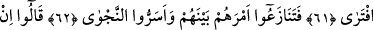

İFTİRA EDEN
PERİŞAN OLUR
57. Dedi ki: “Bizi, yaptığın büyü ile yurdumuzdan çıkarasın diye mi geldin, ey
Mûsâ?
58. Öyle ise, muhakkak sûrette biz de sana, aynen onun gibi bir büyü getireceğiz.
Şimdi sen, seninle bizim aramızda, ne senin, ne de bizim muhalefet etmeyeceğimiz
uygun bir yerde buluşma zamanı ayarla.
59. Mûsâ: “Buluşma zamanınız, bayram günü, kuşluk vaktinde insanların
toplanma zamanı olsun.” dedi.
60. Bunun üzerine Fir’avn dönüp gitti. Hilesini (sihirbazlarını) topladı; sonra geri
geldi.
61. Mûsâ onlara: “Yazık size! Allah hakkında yalan uydurmayın! Sonra O, bir
azâb ile kökünüzü keser! İftira eden, muhakkak perişan olur.” dedi.
62. Bunun üzerine onlar, durumlarını aralarında tartıştılar; gizli gizli fısıldaştılar.
63. Şöyle dediler: “Bu ikisi, muhakkak ki, sihirleriyle sizi yurdunuzdan çıkarmak
ve sizin örnek yolunuzu ortadan kaldırmak isteyen iki sihirbazdırlar sadece.
64. Öyle ise hilenizi kurun; sonra sıra halinde gelin! Muhakkak ki bugün, üstün
gelen kazanmıştır.”
Fir’avn “Dedi ki: “Bizi, yaptığın büyü ile yurdumuzdan çıkarasın diye mi geldin ey
Mûsâ?” Bu âyet, Fir’avn’un Mûsâ (a.s.)’ı nasıl yalanladığını ve yüz çevirdiğini
açıklayan bir başlangıç cümlesidir. Âyetin başındaki hemze, vâkıayı inkâr etmek, çirkin